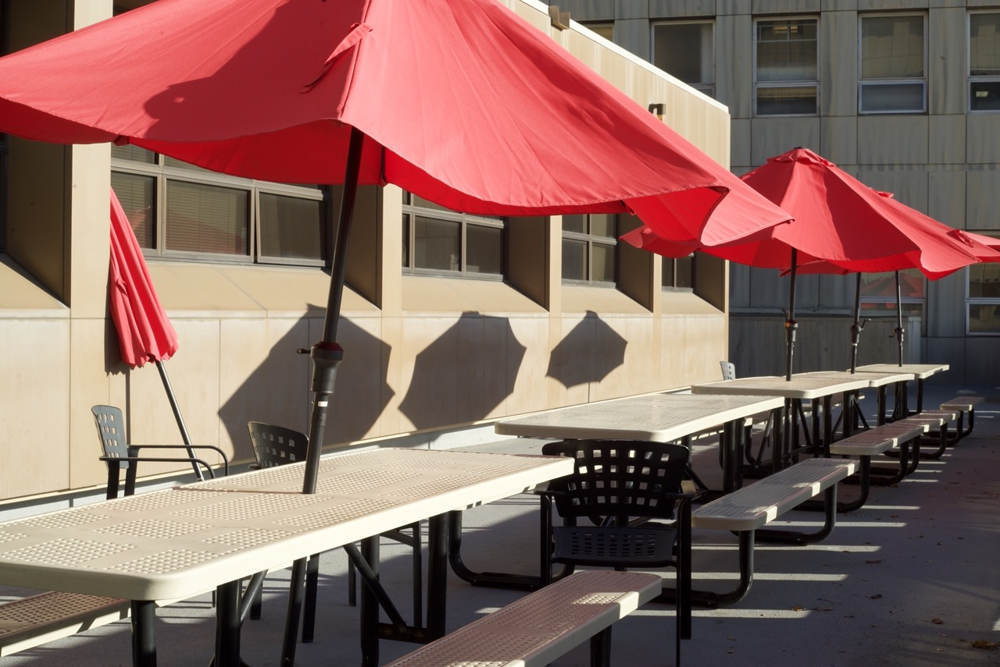
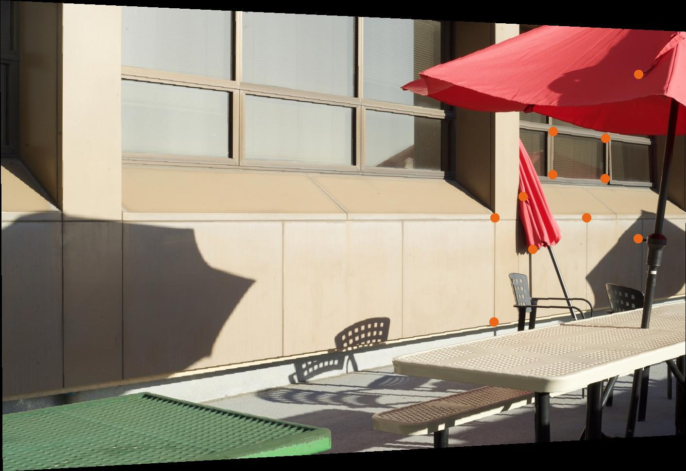

To Rectify an image into a projective mapping we take some keypoints then warp those keypoints to another group of coordinates. We can perform
a least squares regression to discover the best projective transformation for these points, then apply the transformation over the entire image by interpolating the image. This is my derivation of calculating the homography matrix from 4+ points.
We can apply the projective homography to some examples now!
Original
Rectified
Here, I chose points arround a neon sign then rectified them so you can see what the sign says more clearly. Notice there is a large dark border at the right side of the rectified image because there is no image data there to rectify.
Original
Rectified


Now that we can projectively warp images, we can make a mosaic of two or more images! We start with images that share a section and were caught while rotating the camera in a fixed position. If possible, also fix the focal length, focus, ISO, apeture, and white balance.
We then label correspondences on both images. These are not exact due to human (me) error.
Then, I took the average of the correspondences across our images and warped each image to that average. This time, the projective transformation keeps all of the photo, not just the parts in the original boundaries.
Now that the images are warped to the projection we want, we can layer them into a mosaic. I did this by calculating the size of the frame we need for the complete mosaic and making masks that would blend the intersecting region. The intersecting region has feathering for a smooth blend.
Intersecting region
Left Mask
Right Mask
With the masks, we can now blend the images. I tried two methods: Linear Blending and blending with a Laplacian Stack. To my surprise, I found the Linear Blending better than the Laplacian for the masks here because the Laplacian blending gave unwanted artifacts at intersecting edges, but are effectively the same.
Pic 1
Pic 2
Final Mosaic
The mosaics with trees/grass end up with some very high-frequency discrepency that makes the middle of the image look, for lack of a better visceral word, drunk. The bottom mosaic in a lab turned out horribly because I did not rotate the camera correctly when taking the images and the many objects are obviously not aligned properly. I've included them as a cautionary tale of what happens when you use this mosaic creator on bad images. Although, this could be an issue with the keypoints I defined so maybe the automated keypoint finder will fare better.